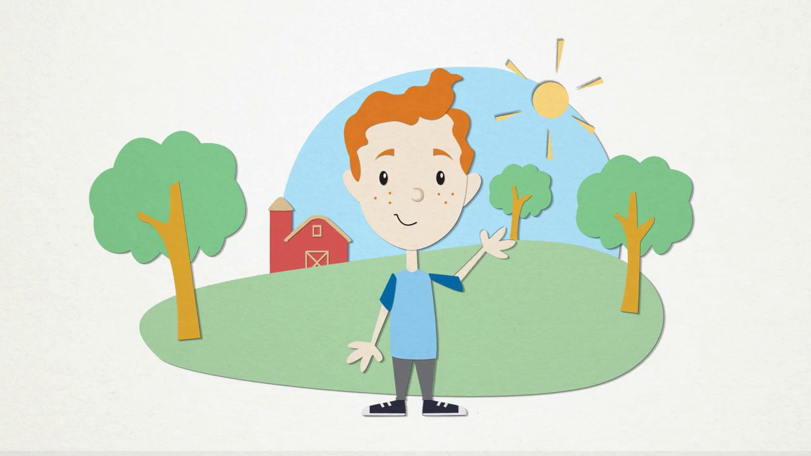
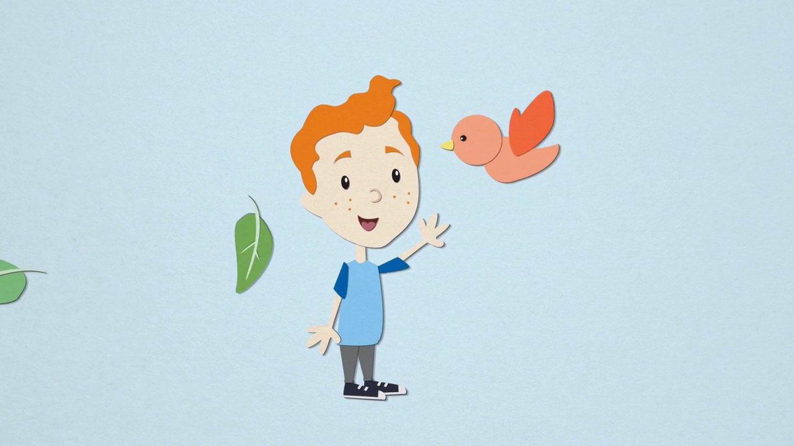
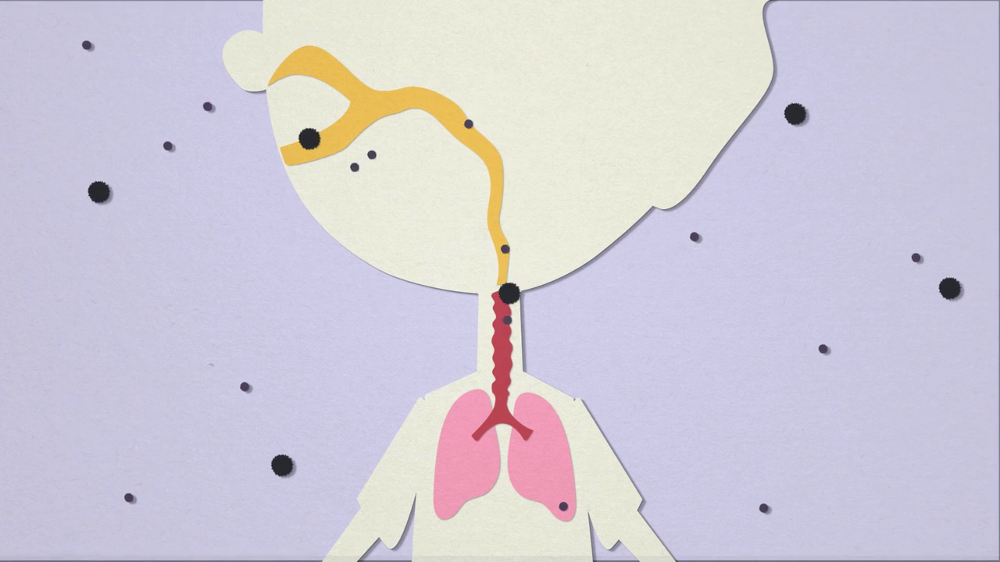
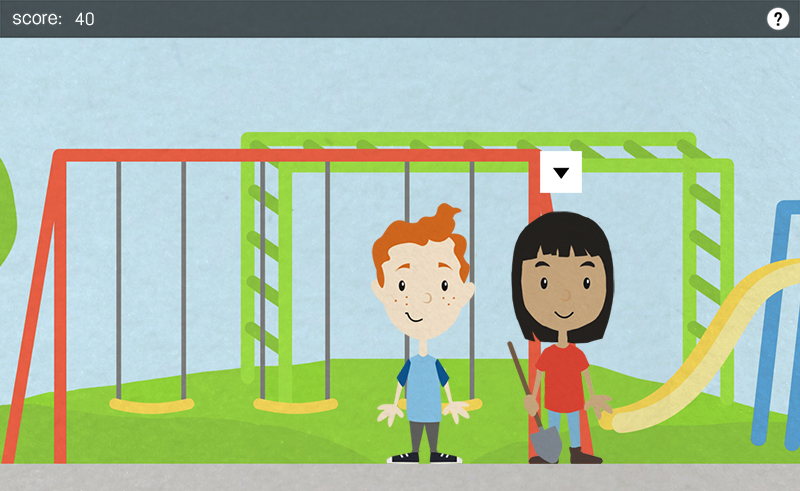
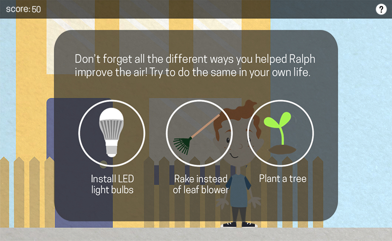
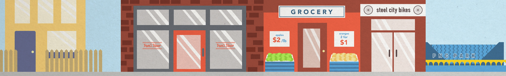
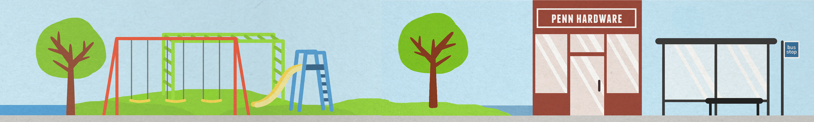
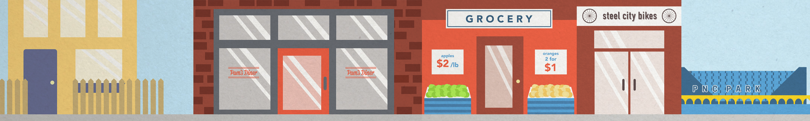
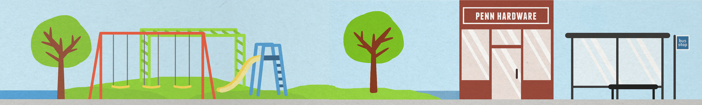

A set of educational experiences for children
Alisa, Brandon, and I were approached by the Breathe Project to design a series of materials to educate the general public about air pollution and particulate matter (PM). I primarily worked on storyboarding, the game's storyline and development, and background/set illustration.
Pittsburgh has one of the worst levels of air pollution in the country. We chose to focus out efforts on those most at risk group: children. By engaging with children first, they become active stakeholders and can motivate their parents.

The first part was an educational video that gives an overview of what PM is and its affects on the body. The web based game is the call to action. Children can play on their own or with their parents. The game covers small steps that individuals can take to improve air quality.
 


